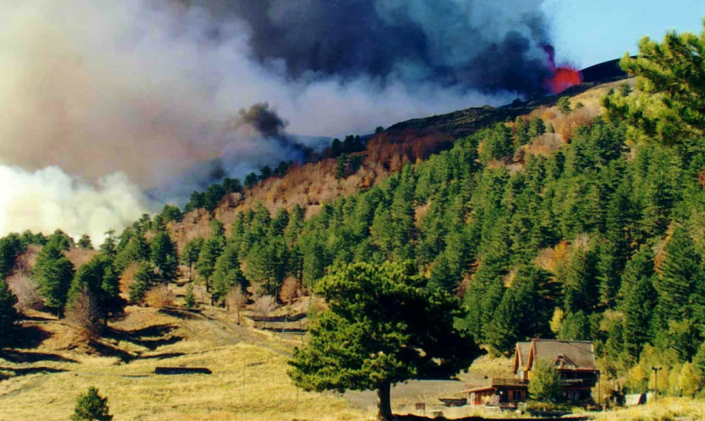
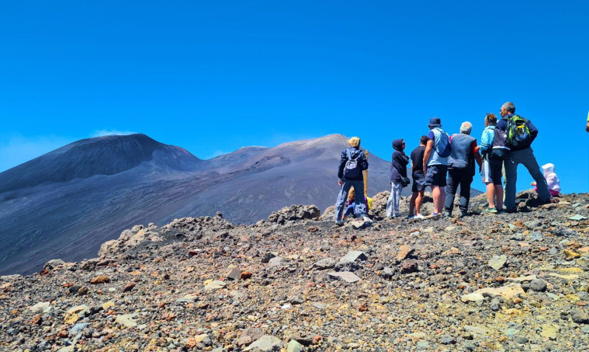

LOCATION
PIANO PROVENZANA
Piano Provenzana, situato sul versante nord dell’Etna, è una stazione sciistica immersa in una grande pineta che offre un paesaggio alpino unico, con la vista del mare Ionio ad est e dello Stretto di Messina a nord. Dopo essere stata colpita dall’eruzione del 2002, la zona si è trasformata in un affascinante deserto di lava, offrendo oggi un paesaggio incontaminato e la possibilità di escursioni nella natura, passeggiate sui crateri e viste panoramiche mozzafiato.
La stazione offre diverse attività invernali come lo sci, lo sci di fondo, lo scialpinismo e lo snowboard. Dispone di quattro piste e impianti di risalita moderni, tra cui tre skilift e una seggiovia quadriposto1. Prima dell’eruzione del 2002, una delle piste era omologata F.I.S. per slalom e slalom gigante e vi si è disputata la Coppa Italia F.I.S. del 2001.
Immagina di trovarti a Piano Provenzana durante il festival, dove le note si fondono con il paesaggio vulcanico. Mentre il sole tramonta, tingendo il cielo di rosso e arancione, l’Etnamusik prende vita. La musica dal vivo risuona tra le montagne, creando un’atmosfera magica a quota 1850 metri. Gli artisti si esibiscono su palchi naturali, circondati dalla natura selvaggia e dalla storia geologica dell’Etna, offrendo un’esperienza indimenticabile che unisce cultura, natura e intrattenimento.
L'ERUZIONE
L'eruzione del 2002 sull'Etna, specificamente a Piano Provenzana, ha segnato un momento storico nella sua esistenza.
Data e inizio: L'eruzione è iniziata la notte tra il 26 e il 27 ottobre 2002 per la stazione turistica di Piano Provenzana. Una forte attività sismica ha segnato l'inizio di questa grande eruzione nell'area nord dell'Etna.
Bottoniera di bocche eruttive: Dopo una breve attività di sfogo, il vulcano ha ripreso fiato e ha formato una serie di bocche laterali e lineari chiamate "bottoniera" che interessavano il rift di nord-est. Queste fratture hanno iniziato a emettere lava e cenere.
Distruttiva colata di lava: La lava, partita da 2500 metri di altitudine, ha rapidamente ricoperto il piazzale di Piano Provenzana, distruggendo i primi negozi di souvenir già danneggiati dai forti terremoti. Questa colata ha cancellato anni di storia e divertimento.
Fine di Piano Provenzana: La forza del vulcano non si è fermata. L'apertura dell'ultimo cratere a quota 2100 metri ha dato inizio alla colata di lava che ha completamente distrutto l'intera stazione turistica di Piano Provenzana. Alberghi, ristoranti, negozi, mezzi spalaneve, piste da sci e strade sono stati cancellati dalla lava incandescente. Quest'ultima ha poi proseguito verso la Pineta Ragabo, dirigendosi verso Linguaglossa.
Momenti di apprensione a Linguaglossa: A Linguaglossa, i cittadini hanno vissuto momenti di apprensione e panico. La continua attività sismica e l'avvicinarsi del fiume di lava incandescente hanno portato alla processione di Sant'Egidio, invocato come nei casi di eruzioni precedenti.
Interventi di contenimento: Mezzi meccanici sono stati utilizzati per cercare di arginare e controllare la massa di fuoco che scendeva rapidamente verso il bosco Ragabo. L'Esercito Italiano ha creato un enorme argine di sabbia all'interno del torrente "sciambro" per rallentare la corsa della colata verso Linguaglossa. La natura, tuttavia, ha deciso di fermarsi a soli 50 metri da questo argine.
In totale, l'eruzione ha distrutto circa 250 ettari di secolare pineta, boschi di querce e l'intera stazione turistica di Piano Provenzana, oltre ai danni subiti dalle altre strutture e strade del versante nord a causa del terremoto. Un evento che ha lasciato un'impronta indelebile nella storia di questa regione.
Vuoi scoprire di più sul vulcano attivo più alto d’europa? Premi su “Scopri di più”
